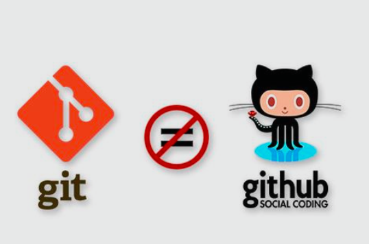

Explicar de forma clara y precisa la creacion, uso y seguimiento de repositorios manipulados por medio de un sistema controlador de versiones CSV Git Y conservacion de repositorios en un CSV Github
con el fin de trabajar en proyectos de forma colaborativa obteniendo versionamientos de cada participante
* Comprender la realizacion basica de paginas web con html 5
* Reconocer elementos y fundamentos basicos para la realizacion de paginas web y diseño
* Realizar ejercicios colaborativos para el aprendizaje por medio de html
Visualizacion de comandos mas utilizados en git y gitHub para el control de cambios visualizacion de posibles conflictos en el trabajo colaborativo
